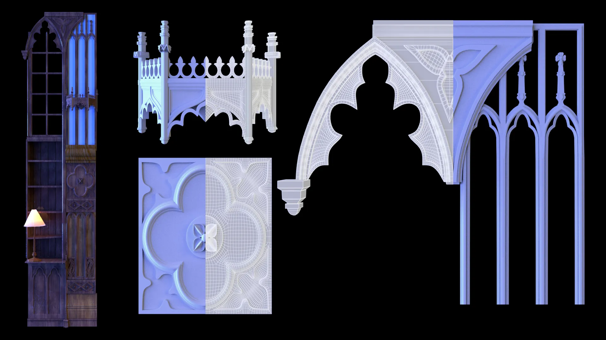

Memie / 心萌 is a 3D artist + coder. She blends a technical + artistic background by making scripted tools to optimize 3D pipelines.
您好，我是心萌！我是學過3D動畫與電腦程式，目前把這兩個方面連起來，寫關於3D過程的程式和工具爲了提高效率
PAST EXPERIENCE 經驗
- 3D Generalist @ studio2 兎子創意股彬有限公司 2022-2023
- THINK TANK TRAINING CENTRE, CGI Asset Program, 2021
- HARVARD UNIVERSITY 哈佛大學, B.A. Art, Film, and Visual Studies 2020
- ZERO VFX, CGI Intern 2020
- PEARL STUDIO 东方梦工厂, Creative Development Intern 2020
- Short Film 'Afterschool' Boston Asian American Film Festival Grand Prix Winner 2019
Mystical Bookstore 魔法圖書館 - 3D Environment Project 3D場景作品
This project was based off the incredible bookstore Livraria Lello in Porto, Portugal. All elements were modeled, UVd, textured, lit, rendered, and post-processed by me.
在葡萄牙有一家超級光華圖書館，它是這個作品的靈感。模型，貼圖，燈光設定，渲染，合成所有的部分都是我負責的。
Key AOVs 分圖層

Procedural Book Shader 程序書貼圖設計
The books and gold band designs were generated procedurally by using random combinations of different colors, multiple gold band patterns, and multiple bump texture patterns to create the illusion of many distinct books without having to hand paint each texture. Books were generated using MASH plus some hand placement. Afterwards, each book was given an object ID, and the textures were fed into a shader which would pick a different combination at random.
Some Mari passes for texturing: a combination of procedural and hand-painted work

Mulan Reimagined - 小花木蘭
This project was inspired by Olga Esther's painting 'Mulan'. I was struck by the quiet sadness of the original painting, and how it captured something essential about the character. Responsible for all aspects: sculpting, modeling, texturing, groom, lighting, renders.
Butterfluff
This was a personal project, with this bug-like creature as the main character who escapes darkness to get to the light. I modeled 3 separate environments for this; sculpted, modeled, textured, and rigged the bug; and then rendered and composited everything.
Rigging controls were added to automate the wing flaps and breathing of the bug, which could be adjusted using keys.
Additional Rig Setup: skeleton, FK/IK controllers, blend shapes, skinning
Short Demos
Animated Short
Used this rig + 3 unique environments + original music in this personal animated short
Stills
Modeled a lot of low-poly buildings to give the impression of a 'global village' street, including various Western + Eastern inspired building styles. Bug's desing started as a 2D sketch
Mushrooms were shaded and illuminated procedurally. This way, they started to glow in a similar pattern, but the rate at which they turned on could be controlled centrally using expressions, so there was no need to key individual mushrooms and set their timing manually. Here I tried several color variations before settling on the look in the final animation.
MAYA MEL
PYTHON
AFTER EFFECTS
A collection of various helpful small maya scripts and functions that aren't included in the standard MEL library.
Push elements onto string arrays
Select all polygons within a group/hierarchy
PROBLEM: using the viewport to select can be slow with large scenes. Using the outliner, it's easy to select groups but more annoying to select individual shapes.
SOLUTION: this script allows you to select all visible polygon meshes within a group straight from the outliner
Add to all legacy render layers
Convert Lambert Materials to Arnold
PROBLEM: When maya converts materials to arnold, it doesn't automatically port the settings, such as any files connected to the diffuse.
SOLUTION: This script automatically attaches any files associated with color, transparency, and incadescence